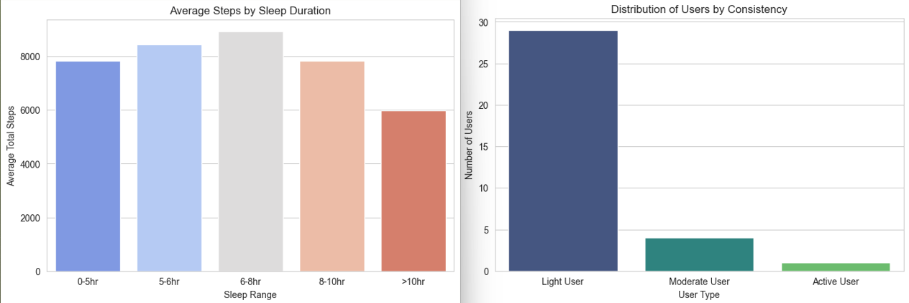
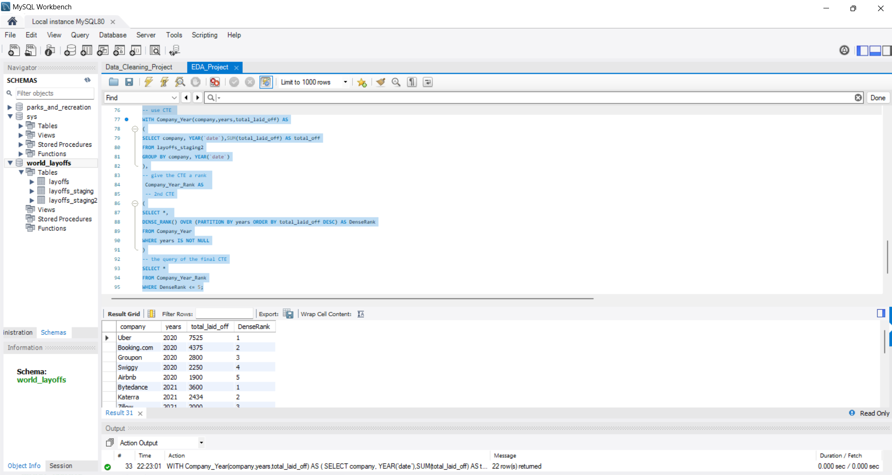
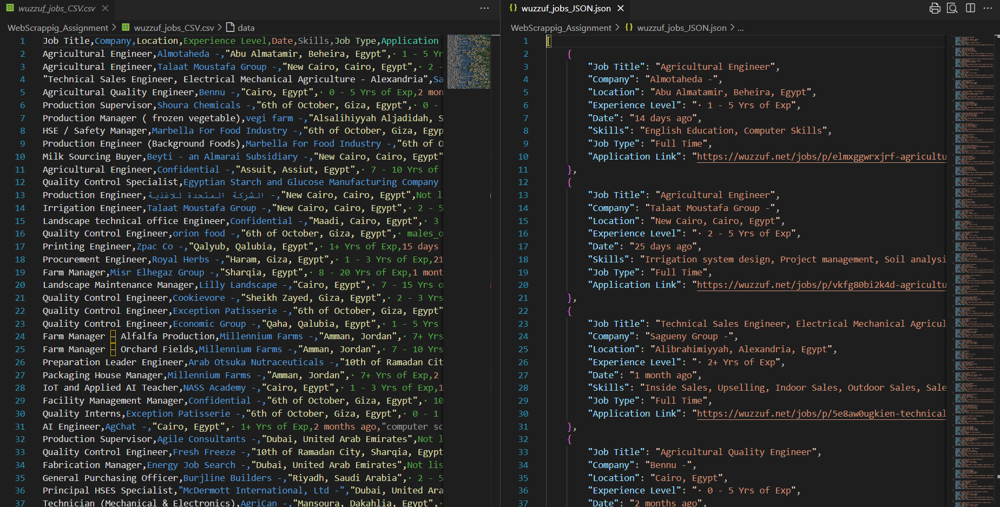
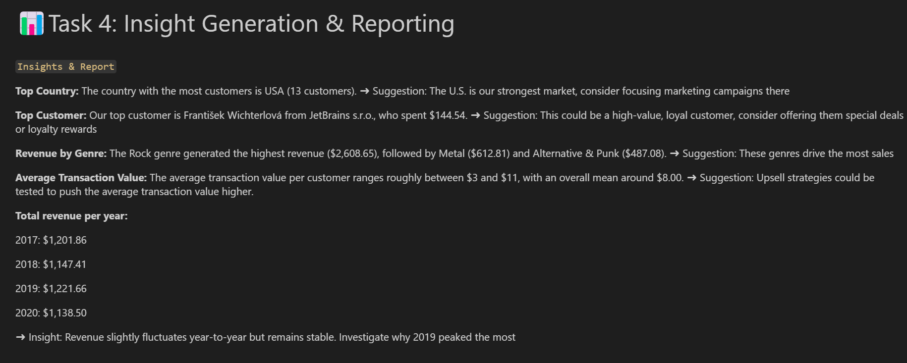

Analyzed Bellabeat user activity, sleep, and weight data to uncover meaningful health and lifestyle insights. Leveraged SQL queries, Pandas, and visualizations to: 1) Categorize users by activity consistency (Light, Moderate, Active). 2) Examine sedentary vs active lifestyle patterns. 3) Identify peak hours of daily steps. 4) Explore the relationship between sleep duration and activity. 5) Track weight and BMI trends over time. 6) Created intuitive charts and visualizations to communicate trends and support actionable insights for personalized wellness recommendations and engagement strategies.

This project showcases a comprehensive data cleaning and exploratory data analysis (EDA) workflow using SQL. It uses a dataset on global tech layoffs and demonstrates how to transform raw data into meaningful insights.

Built a Python web scraper using Selenium to extract detailed engineering job listings from Wuzzuf, including title, company, location, experience, posting date, skills, job type, and application link. The tool handles dynamic content, pagination (up to 7 pages), and prevents duplicates, saving clean data in CSV and JSON formats. This project showcases skills in web automation, data extraction, and real-time market analysis, providing actionable insights for job seekers and recruiters.

Project Description:
A data analysis project exploring customer demographics, spending habits, and revenue trends for a fictional online music store.
Using Pandas and SQLite data, I cleaned, merged, and analyzed multiple tables
(customers, invoices, invoice_lines, tracks, genres)
to generate actionable business insights.
Key Insights:
- Top Country: USA has the highest number of customers (13).
- Top Customer: František Wichterlová is the highest spender ($144.54).
- Top Genre: Rock generated the most revenue ($2,608.65).
- Average Transaction: $7–$11 per customer on average.
- Revenue Trend: 2019 was the peak year with $1,221.66 total revenue.